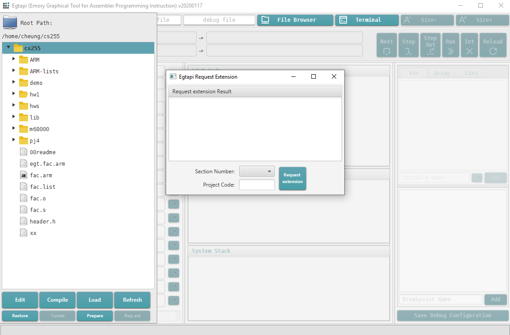

Due date: See Class Webpage
Preparation
The only difference is that for this homework, you must use the homework code hw2
The preparation procedure will create a folder named hw2 and copies the answer file named hw2.s in to the folder.
You must edit the answer file hw2.s with your answers to the question in this assignment.
You can use EGTAPI to edit the answer file hw2.s
The questions are given below.
Each question is 5 pts.
|
Each question is 5 pts.
|
Show the complete long multiplication (i.e.: show the all the multiplication steps) to get full credit
Show the complete long division (i.e., show the all the division steps) to get full credit
You are given the following addition table for the number system based on the base number 5:
+ | 1 | 2 | 3 | 4
----+----+----+----+----
1 | 2 | 3 | 4 | 10
----+----+----+----+----
2 | 3 | 4 | 10 | 11
----+----+----+----+----
3 | 4 | 10 | 11 | 12
----+----+----+----+----
4 | 10 | 11 | 12 | 13
34(5)
+ 42(5)
---------
|
Extension requests must be made before the assignment is due !!!
"Free" extension requests can be granted for illness and family emergencies.
To make an extension request, do the following in EGTAPI:
1. Click on File Browser in EGTAPI
2. Click on Req ext (lower right corner) in the File Browser menu
The "Egtapi Extension Request" window will pop up:

3. In the "Section Number" drop down tab:
Select "1" if you are in Section 1
Select "2" if you are in Section 2
4. Enter "Project Code": hw2
5. Click the "Request extension" button
6. You will see the request result in the right most panel.
If your request is successfull, you will see:
Extension request was successful:
Turn hw1 in before ..... (new due date)
in the "Request extension" pop up window (you may need to scroll down)
|
/home/cs255001/req-ext hw2 // If you're in section 1
or
/home/cs255002/req-ext hw2 // If you're in section 2
|
You request will be successful if you have not exceeded the maximum number of "free" (no-questions-asked) requests allowed
1. Click on File Browser in EGTAPI
2. Select the file that you want to turn in
In this case, select the file "hw2.s" inside your hw2 folder
3. After selecting the file (in this case: "hw2.s"), click Turnin in the File Browser menu
The "Egtapi Turn-in" window will pop up
4. In the "Section Number" drop down tab:
Select "1" if you are in Section 1
Select "2" if you are in Section 2
5. Enter "Project Code": hw2
6. Click the "Turn in" button
7. You will see the turn in result in the right most panel.
Make sure that your see the message: "Program ... has been successfully turned in..."
|
Alternately, you can turn in your file using the EGTAPI Terminal:
1. Open the EGTAPI Terminal (click on "Terminal")
2. Enter these command in the lower input area of the Terminal panel:
(a) cd ~/cs255/hw2 (go to your hw2 folder)
(b) /home/cs255001/turnin hw2.s hw2 // If you're in section 1
or
(b) /home/cs255002/turnin hw2.s hw2 // If you're in section 2
|
If you want to see what you have turned in, then
1. Open the EGTAPI Terminal (click on "Terminal")
2. Enter this command in the lower input area of the Terminal panel:
/home/cs255001/turnin // If you're in section 1
or
/home/cs255002/turnin // If you're in section 2
|
Students will be graded partially on the basis of their homework assignments. These homework assignments are to be treated as examinations, and are expected to be your individual work. While discussions with other students in the course may be permitted or encouraged by your instructor, you should write your program yourself. Your instructor (and any teaching assistants assigned to the course) will be glad to help you to the extent that he or she feels reasonable.
Submissions based on other students solutions in prior offerings of the course specifically violate these guidelines, as do submissions prepared with the help of an outside "tutor".
You should take precautions to protect the confidentiality of your work, do not collaborate on questions that you turn in for a grade, do not show your solution to a fellow student, not even after the due date for some students may have receive extension.
All submissions should include a comment statement near the top of the program of the form:
THIS HOMEWORK IS MY OWN WORK, IT WAS WRITTEN WITHOUT CONSULTING A TUTOR OR WORK WRITTEN BY OTHER STUDENTS - your name
Cases of apparent plagiarism or collusion will be referred to the Honor Council.